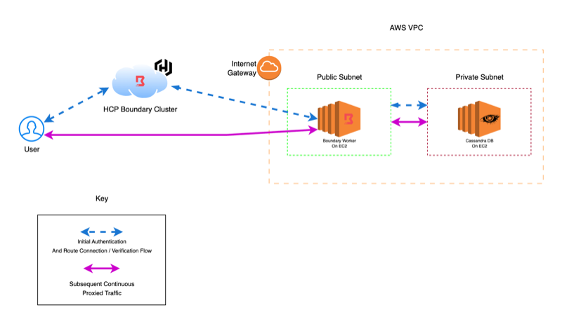

Secure Access to Private Cassandra with HashiCorp Boundary
AWSHashiCorpBoundaryEC2HCPCassandraDatabaseSecurityTerraform
1118 Words | 5 Minutes, 4 Seconds
2025-07-24 10:00 -0500
While building a project with a full AWS stack, I needed Cassandra as my database solution. Initially, I looked into AWS Keyspaces (Amazon’s managed Cassandra service), but discovered it doesn’t offer a way to keep your service endpoints truly private. In lieu of this, I decided to self-host a Cassandra DB instance on a private EC2 instance, allowing me to set my ingress and egress through a private IP. However, this exposed a new challenge: how do you securely access and manage a database that you’ve intentionally made unreachable from the internet?
The traditional solutions like VPNs or bastion hosts felt too loose since I didn’t want to grant broad network access just to reach one database. After exploring various options, I made my choice, HashiCorp Boundary, which turned out to be exactly what I needed for secure, identity-based access to private resources.
The Challenge
Traditional approaches to securing database access often involve:
- VPNs that provide overly broad network access
- Bastion hosts that become single points of failure
- Shared credentials that are difficult to rotate and audit
HashiCorp Boundary solves these challenges by providing just-in-time, identity-based access to specific resources.
What is HashiCorp Boundary
HashiCorp Boundary is a remote access solution that acts as an identity-aware proxy, creating secure tunnels between users and target systems. It operates as a control plane that manages workers deployed across your infrastructure, establishing encrypted connections to target machines/services. Boundary supports multiple authentication backends including OIDC, LDAP, and username/password, allowing integration with existing identity providers. The platform provides additional features such as session recording, real-time monitoring, and audit logs for compliance and security oversight.
Solution Overview
Using HCP Boundary with self-managed workers, we can create a secure proxy architecture that:
- Eliminates credential sharing - Access is identity-based, not credential-based
- Provides zero-trust access - Resources remain private by default
- Supports dynamic authorization - Permissions can be granted just-in-time
Demo Architecture
I’ve created a Terraform demo that showcases this pattern using AWS and Apache Cassandra. The Terraform automates the entire infrastructure provisioning and configuration process, including EC2 instances with proper security groups, Boundary worker installation, and Cassandra setup with authentication enabled. This setup leverages controller-led registration, which is a feature of HashiCorp Boundary that allows for controller-based worker discovery and connection. This method eliminates manual worker configuration steps, uses HCP-generated activation tokens for secure registration, and automatically applies worker tags for easy target identification. After applying Terraform, you should see the following:
Infrastructure Components
- VPC with public/private subnets - Proper network isolation
- Boundary Worker (EC2) - Self-managed worker in public subnet for external connectivity
- Cassandra Database (EC2) - Private database instance with no direct internet access
- Security Groups - Strict network controls allowing only necessary traffic
- NAT Gateway - Controlled outbound access for private resources
Boundary Configuration
- Controller-led registration - Automated worker registration with HCP Boundary
- Worker tags - Proper tagging for target filtering to ensure that the worker with access to the target is the one that is used to proxy traffic
Architecture Overview
The following diagram illustrates the complete architecture and data flow for accessing a private Cassandra database through HCP Boundary with self-managed workers:

Prerequisites
Before running the demo, you’ll need:
- AWS Account with permissions to create VPC, EC2, and networking resources
- AWS CLI configured with valid credentials
- Terraform v1.12.2 or later installed
- HCP Boundary Cluster with admin access
- cqlsh installed locally for connecting to Cassandra
- AWS Key Pair for SSH access and EC2 standup
Quick Start
git clone https://github.com/RyanDerr/boundary-cassandra-terraform
cd boundary-cassandra-terraform
cp terraform.tfvars.example terraform.tfvars
# Edit terraform.tfvars to suit your configuration
terraform init
terraform apply
The deployment creates all necessary infrastructure and automatically:
- Registers the worker with your HCP Boundary cluster
- Configures Cassandra with authentication enabled
- Sets up proper network security and routing
Outputs
After successful deployment, Terraform provides:
- Boundary worker public IP and connection details already registered to your HCP Boundary cluster
- Cassandra EC2 setup and running with private IP for target configuration
- Worker tags for setting up Boundary targets
- Security group IDs and VPC information
Connecting to Cassandra via Boundary
Once your infrastructure is deployed, you can connect to the private Cassandra instance using Boundary. Here’s how to set up and use the connection:
Setting Up the Boundary Target
-
Create a Target directly in your HCP Boundary console:
- Navigate to Targets
- Click “New Target”
- Type: TCP
- Name:
cassandra-db - Default Port: 9042 (Cassandra’s native protocol port)
- Address: Enter the Cassandra private IP address (from Terraform outputs)
- Worker Filter: Use tags to specify which worker should handle connections
"cassandra-access" in "/tags/type" - Session Connection Limit: 1 (or as needed)
- Alias:
cassandra-dbfor an easy to remember name when issuing the command to connect to the target
-
Configure Static Credentials:
- Navigate to Credential Stores
- Create a new Static Credential Store
- Add username/password credentials for Cassandra authentication
- By default Cassandra uses cassandra/cassandra
- Attach the credential to your target
Connecting via Boundary CLI
With your target and alias configured, connect to Cassandra:
# Set the HCP Boundary cluster address
export BOUNDARY_ADDR="https://your-cluster-id.boundary.hashicorp.cloud"
# Set the authentication method ID
export BOUNDARY_AUTH_METHOD_ID="ampw_1234567890"
# Connect using the alias
boundary connect cassandra cassandra-db
# Alternative: Connect to a specific keyspace
boundary connect cassandra cassandra-db -keyspace system
The boundary connect cassandra command will:
- Establish a secure tunnel through the designated worker
- Automatically inject the configured static credentials
- Launch a cqlsh session connected to your private Cassandra instance
Example Connection Flow
$ boundary connect cassandra cassandra-db
Connected to Ryan EC2 Cluster at 127.0.0.1:55005.
[cqlsh 6.0.0 | Cassandra 4.0.0 | CQL spec 3.4.5 | Native protocol v4]
Use HELP for help.
cassandra@cqlsh>
Verifying the Connection
Once connected, you can verify your Cassandra access:
-- Check cluster information
SELECT cluster_name FROM system.local;
-- List keyspaces
DESCRIBE keyspaces;
-- Create a test keyspace
CREATE KEYSPACE test_boundary WITH replication = {
'class': 'SimpleStrategy',
'replication_factor': 1
};
-- Use the keyspace
USE test_boundary;
Session Management
Boundary provides excellent session visibility:
- View active sessions in the HCP Boundary console
- Monitor connection duration and usage
- Terminate sessions as needed for security compliance
- Review session logs and audit trails
Important Limitation
Authentication Support: Currently, Boundary only supports Cassandra’s PasswordAuthenticator
This limitation is important to consider when integrating Boundary with existing Cassandra clusters that may use different authentication mechanisms.
Conclusion
HCP Boundary with self-managed workers provides a solution for securing access to private database resources without the complexity of VPNs or bastion hosts. This demo showcases how modern zero-trust patterns can be implemented with minimal infrastructure overhead.
Ready to try it yourself? Check out my demo repository and start securing your database access today.
Note: The
boundary connect cassandracommand is currently in testing phase and not yet released in a major or minor version as of this blog post’s publication date. Check the Boundary release notes for the latest availability.